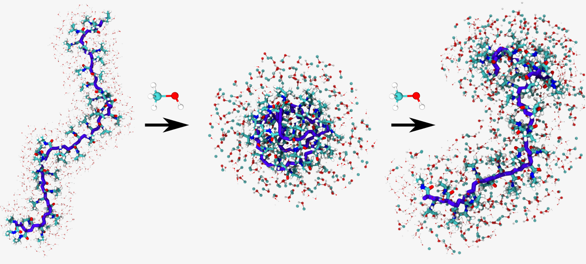
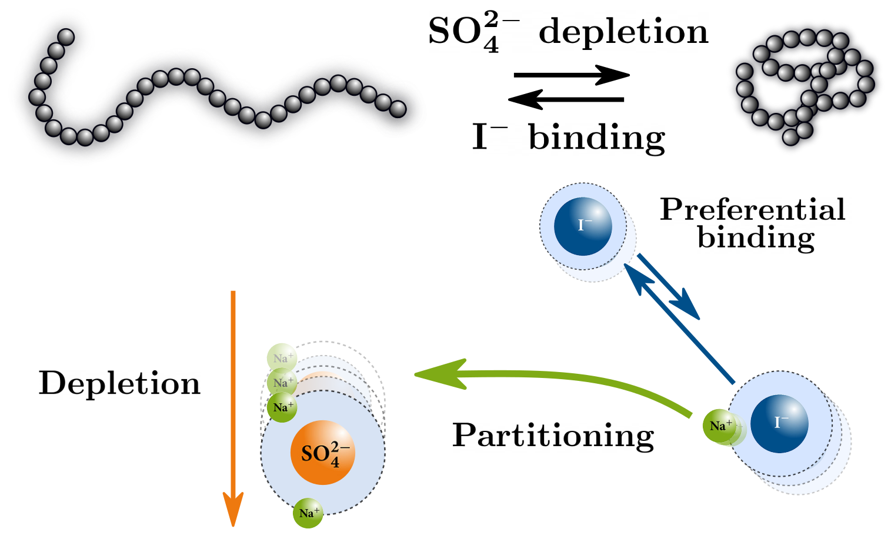
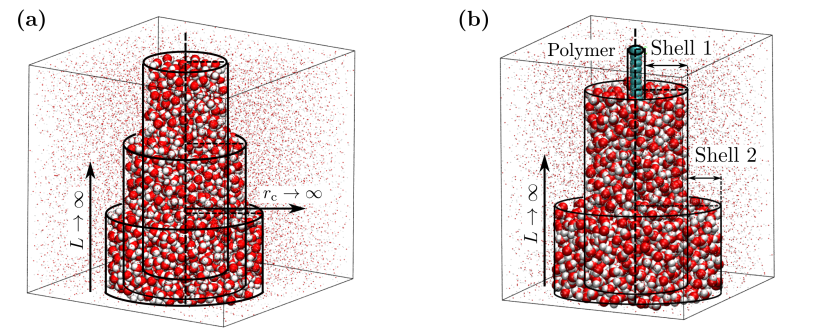
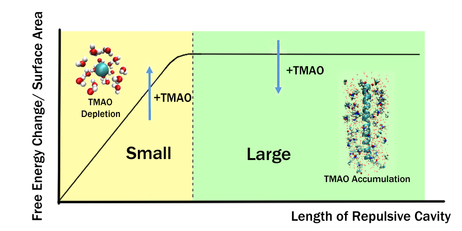

Research Interests
My research focuses on the modeling of stimuli-responsive materials and interfacial phenomena in soft matter systems using a combination of molecular simulations, free energy calculations, statistical mechanical and mean-field theoretical approaches. A complimentary focus of my research is to develop methods for the thermodynamic characterization of solute solvation shell, particularly for flexible solutes such as macromolecules, using a combination of molecular simulations, advanced sampling methods and theoretical frameworks such as small system thermodynamics.
Research Highlights

Cosolvent Effects on the Phase Behavior of Responsive Polymers:
The coil–globule transition of aqueous polymers is of profound significance in understanding the structure and
function of responsive soft matter. In particular, the remarkable effect of amphiphilic cosolvents (e.g., alcohols) that
leads to both swelling and collapse of stimuli-responsive polymers has been hotly debated in the literature,
often with contradictory mechanisms proposed. A predominant focus in the literature has been placed on
the role of polymer–cosolvent attractive interactions whereas the role of excluded volume interactions
(repulsive interactions) has been largely neglected. Using molecular dynamics simulations and free energy
calculations, we demonstrated that alcohols preferentially adsorb on the polymer and reduce the free energy
cost of creating a repulsive polymer–solvent interface via a surfactant-like mechanism which surprisingly
drives polymer collapse at low alcohol concentrations. This hitherto neglected role of interfacial solvation
thermodynamics is common to all coil–globule transitions, and rationalized the experimentally observed effects
of higher alcohols and polymer molecular weight on the coil-to-globule transition of thermoresponsive
polymers. Further, we showed that polymer–(co)solvent attractive interactions reinforce or compensate
this mechanism and it is this interplay which drives polymer swelling or collapse. The surfactant-like
mechanism proposed in our study is generic and applicable to other polymer solutions containing amphiphilic
cosolvents.
Soft Matter, 2022, DOI:10.1039/D2SM00146B; The Journal of Chemical Physics 154 (13), 134903, 2021; Communications Chemistry 3 (1), 1-7, 2020; Macromolecules 52 (11), 4131-4138, 2019

Salt Effects on the Coil-to-Globule Transitions of Thermoresponsive Polymers: The anion Hofmeister series classifies anions in order of their ability to salt out proteins: CO32- > SO42- > S2O32- > H2PO4- > F- > Cl- > Br- NO3- > I- > ClO4- > SCN-. Specifically, anions on the right hand side of this series are weakly hydrated and partition to nonpolar surfaces such as polymer/water or air-water interfaces On the other hand, strongly hydrated anions (left hand side of the series) tend to strongly interact with water molecules and remain in the bulk water environment. Recent experiments have indicated that the combined effect of a weakly hydrated and a strongly hydrated anion on the lower critical solution temperature (LCST) of poly(N-isopropylacrylamide)(PNIPAM) is nonadditive. Our study focused on this nonadditive effect on the coil-to-globule of PNIPAM using large scale atomistic simulations. The simulations were able to capture the experimentally observed effect of mixed salts (NaI-Na2SO4) on the coil-globule equilibrium of PNIPAM. Interestingly, the predicted change in LCST as a function of salt concentration from simulations, through a semi-quantitative analysis, is in quantitative agreement with experimental measurements. We showed that nonadditive ion effects on the coil-to-globule transitions of PNIPAM arise due to the interplay between depletion of the strongly hydrated sulfate ions and the preferential accumulation of the iodide ions on the polymer leading to favourable PNIPAM-I- interactions. This correlates with the partitioning of the Na+ cations from the counterion cloud of the weakly hydrated iodide ions to the counterion cloud of the strongly hydrated sulfate ions. The proposed mechanism is applicable to other solutions containing a mixture of a weakly hydrated and strongly hydrated anion.


Solvation Shell Thermodynamics:
The ability of various cosolutes and cosolvents, in aqueous solutions, to enhance or quench interfacial solvent density
fluctuations have crucial implications on the conformational equilibrium of macromolecules such as polymers and
proteins. Therefore characterizing the thermodynamics of the solvation shell and their dependence on stimuli such as
cosolvent/cosolute concentration is very important. The small system method (SSM) exploits the unique
nature of finite sized open systems in which, thermodynamic quantities scale with the inverse system size.
This scaling allows for the accurate estimation of properties in the thermodynamic limit in finite size
simulations. Our study extends the SSM to characterize the thermodynamics of the hydration shell of a model
extended hydrophobic solute in water and water-urea/methanol mixtures. In parallel, our other study was
aimed at computing the contribution to the solvation free energy arising from fluctuating solute-solvent
cohesive interactions which is known as “Fluctuation entropy”. The fluctuation entropy is usually computed
through indirect or approximate methods which are not applicable to solutes with flexible conformational
degrees of freedom such as macromolecules. This study proposed a direct method based on the indirect
umbrella sampling (INDUS) method to directly compute the fluctuation entropy which can be applied to
macromolecules.
The Journal of Chemical Physics, 2022, DOI: 10.1063/5.0090646; Nanomaterials 10 (8), 1460, 2020; The Journal of Physical Chemistry B 125 (39), 11026-11035, 2021

Hydrophobic Length Scale Dependence of Osmolyte Effects:
Osmolytes such as Trimethylamine N-oxide (TMAO) regulate the thermodynamic stability of proteins and
polymers, and are shown to play an important role in biological systems. The effect of TMAO on the solvation of
nonpolar solutes is not well understood. Our study focused on the effect of TMAO on the hydrophobic hydration and
hydrophobic interactions of “small” and “large” hydrophobic solutes using molecular dynamics (MD) simulations and
free-energy calculations. Interestingly, the simulation data indicated the occurrence of a length scale crossover in the
TMAO interaction with repulsive Weeks–Chandler–Andersen (WCA) solutes: while TMAO is depleted from the
hydration shell of a small WCA solute (methane) and increases the free-energy cost of solute-cavity formation, it preferentially binds to a large WCA solute (α-helical polyalanine), reducing the free-energy cost of solute-cavity
formation via a surfactant-like mechanism. Significantly, the study shows that this surfactant-like behaviour of TMAO
reinforces the solvent-mediated attraction between large WCA solutes by means of an entropic force
linked to the interfacial accumulation of TMAO. It therefore favours solute–solute contact states that
minimise the surface area exposed to the solvent and have a small overall number of TMAO molecules
adsorbed.
Physical Chemistry Chemical Physics 24 (4), 2080-2087, 2022